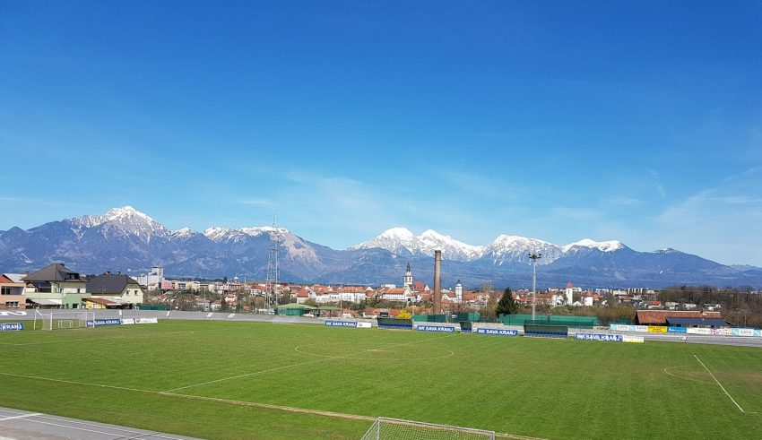

Začetki organizirane nogometne vadbe v Stražišču segajo v leto 1932, ko se pojavita dve skupini, sokolsko (liberalno) usmerjena Savica (deluje na Pantah – okolica Gasilskega doma) in orlovsko (klerikalno) usmerjena ZVEZDA (deluje na cerkvenem dvorišču – okolica Lekarne). Skupini se kmalu združita, leta 1935 nastane Nogometni klub SAVICA.
Prvo igrišče Nogometnega kluba Savica v Stražišču krajani s prostovoljnim delom in lastnimi sredstvi (odkupijo Holchackerjev travnik in ga ogradijo z visokimi deskami) naredijo na lokaciji današnjega Mercatorja in otroškega igrišča. Igrišče / stadion ima celo razsvetljavo, na otvoritveni tekmi 5.9.1938 naj bi bili zbrani vsi prebivalci Stražišča.
V obdobju do druge svetovne vojne NK Savica igra vidnejšo vlogo v gorenjski regiji (takratni vodilni kranjski klub NK KOROTAN s svojo močjo in vplivom NK Savici ne dovoli vidnejšega preboja – boljše igralce NK Savice s pritiskom s strani kranjskih delodajalcev vključuje v »svoj« klub NK KOROTAN), medtem ko med samo vojno nogometna aktivnost v Stražišču povsem zamre.
Takoj po vojni se leta 1945 NK Savica preimenuje v NK Stražišče, leta 1950 v NK Železničar (leta 1950 nogometna sekcija NK Stražišče – do takrat delujoča znotraj TVD Partizan, prestopi v ŠD Železničar) in leta 1954 v NK Projektor – igrajo in trenirajo na dodatnih prostorih današnje železniške postaje in tovarne Iskra – klub ponovno zavzame pozicijo enega izmed pomembnejših klubov v gorenjski regiji, najboljši igralci prehajajo v Ljubljanske klube, ki nastopajo v najvišjih rangih tekmovanja – tudi v jugoslovanskem prostoru.
Množičnost, organizirano in kakovostno delo leta 1954 prisilijo okolico v gradnjo novega nogometnega stadiona, ki kasneje dobi tudi speedway stezo (Šport v Stražišču – knjižna izdaja iz leta 1992 navaja zaključek steze 1957 – uporabljali naj bi jo tudi atleti). Člansko moštvo se v sezoni 1954/55 uvrsti v 1. slovensko ligo zahod in se že v prvi sezoni nastopanja uvrsti na 4. mesto. Klub do 1974 uspešno tekmuje in deluje kot član ŠD Mladost pod imenom NK MLADOST. Člani večji del obdobja nastopajo v 1. slovenski ligi zahod (Ljubljansko Primorska liga), mlajše selekcije pa vidnejšo vlogo v gorenjski regiji.
Leta 1972-1974 NK MLADOST z lokalnimi reorganizacijami športa in preimenovanji organizacij pridobi novo ime, Nogometni klub SAVA Kranj. Podjetje SAVA kot generalni prevzame pretežni del financiranja športnih dejavnosti v Stražišču. V tem obdobju na nacionalnem nivoju sprejeti Portoroški sklepi močno posežejo v delovanje klubov, tudi na novo imenovanega NK Sava, saj klub za igranje v višjih rangih tekmovanja ne izpolnjuje pogojev (klubska piramida z mlajšimi selekcijami, zahtevano število mladih igralcev v članski ekipi,… )
Vodstvo kluba za delo z mladimi angažira dva univerziteno izobražena trenerja, nogometna entuzijasta, tudi uspešna igralca bivšega jugoslovanskega prostora, ki s svojim delom (novačenje talentiranih otrok s celotne kranjske občine in sistematično strokovno delo) klub v nekaj letih postavita na sam vrh mladinskega nogometa na Gorenjskem, tudi pred NK TRIGLAV. Leta 1976 strokovno okrepljeno vodstvo NK Sava poskrbi tudi za prenovo travne površine glavnega nogometnega igrišča, s katero igrišče pridobi status najboljšega igrišča na Gorenjskem.
Zlato obdobje mladinskega nogometa v Stražišču (NK Sava v tem obdobju predstavlja vrh nogometne šole na Gorenjskem), iz katerega posamezniki nastopajo tudi v reprezentanci Slovenije, nezanemarljivi del igralcev mladinske šole pa dopolnjuje tudi prvo člansko moštvo prvoligaške ekipe NK Triglav, kasneje Živila Naklo, v Stražišču traja nekje do leta 1990, ko mladinci po treh sezonah nastopanja v 1.SML kot edini predstavnik Gorenjske izpadejo rang nižje, v 2.SML.
Obdobje po osamosvojitvi Slovenije, torej po letu 1990, močno spremeni delovanje nogometnih klubov, saj je družba s tranzicijo in tržnim gospodarstvom bistveno manj naklonjena športu, prav tako honorarnim in volonterskim športnim delavcem. Formira se novo vodstvo, v bolj lokalni zasedbi, ki deluje in v nogometno vadbo vključuje pretežno bolj domače, stražiške otroke in trenerje.
Tako je v letih 1990 do 2007 pod strokovnim vodstvom domačega, stražiškega trenerja in dveh pomočnikov, ravno tako domačinov, s kakovostnim delom v mlajših selekcijah klub konstantno prisoten v slovenskem prostoru 2 ranga v mladinski in kadetski konkurenci (tudi s pomočjo odprtosti kluba -sestava ekip s kransko tržiškega teritorija) , ter konstantno v vrhu vseh mlajših selekcij v gorenjskem tekmovanju – tudi Triglav najboljšim generacijam. Vrhunsko strokovno delo je kronano celo z ekupo U12, ki v sezoni 2000/2001 postane PODPRVAK SLOVENIJE (v finalu mora priznati premoč NK Mariboru) Člani NK Sava občasno nastopajo v 3. slovenski nogometni ligi. Vodilno vlogo pri delu z mladimi in sami množičnosti v tem obdobju na Gorenjskem prevzame NK Triglav Kranj.
Leta 2007 zaradi zelo različnih pogledov na vodenje kluba in na samo tekmovalno udejstvovanje NK Sava v slovenskem nogometnem prostoru klub, kot sam pravi, s težkim srcem zapusti že omenjeni domači strokovnjak. Preveriti status mladinske in kadetske ekipe. Med tem časom prevzem članske ekipe Sava s strani Triglava.
Agonija se nadaljuje do leta 2010, ko klub premore le še dve, tri selekcije, mlajše od 12 let (člani ekipe U14 so se zaradi malo številčnosti primorani priključiti ekipi takratne NK ZARICA) – skupaj v klubu cca. 40 otrok.
Leta 2011 se v delo v klubu vključita dva bivša igralca in zlatih časov mladinskega nogometa – otroka NK Sava, prevzameta tudi vodenje kluba. V obdobju napredka informacijske tehnologije in upada interesa ukvarjanja s športom s strani mladih, se klub v naslednjih letih sooča z izzivi zagotavljanja primernih pogojev za vadbo (objekti, igrišča, strokovno delo) ob kakovostnem trenerskem delu tudi z aktivnim vključevanjem najmlajših v športno nogometno vadbo.
Klub ima v obdobju od leta 2014 dalje v članski konkurenci stabilnega tretjeligaša, popolnjene so tudi vse kategorizirane ekipe po pravilih NZS, s skupnim število otrok in mladine 150 – 200, tudi občasni preboji mladinskega nogometa v slovenski prostor (ekipa U15 v sezoni 2018/2019 nastopa celo v 1. slovenski ligi, mladinci in kadeti pa 3 sezone v 2. Slovenski ligi.
Vodstvo kluba je v letih od 2011 do danes s srčnim delom, močno energijo in z lastnim pridobivanjem sredstev in ob pomoči občine zgledno uredila tudi svoj del športnega parka (prenova garderob, pridobitev novih garderob, umestitev in ureditev otroškega igrišča, namakalni sistem za travnato igrišče, nova betonska konstrukcija tribune, prenova gostinskega lokala).
S porastom številčnosti otrok v nogometni vadbi se vedno bolj povečuje potreba po kakovostni vadbeni površini, za kar tako bližnja kot širša lokalna skupnost ne kaže pretiranega interesa, čeprav tovrstne površine premorejo že najmanjše vasi.